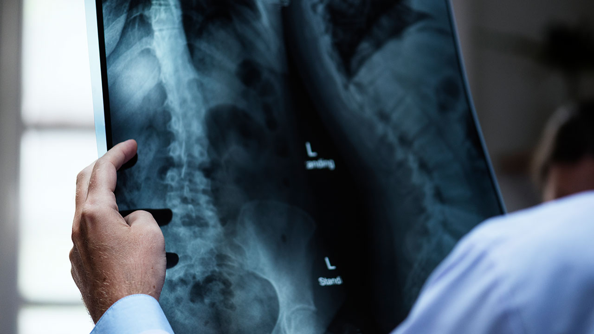
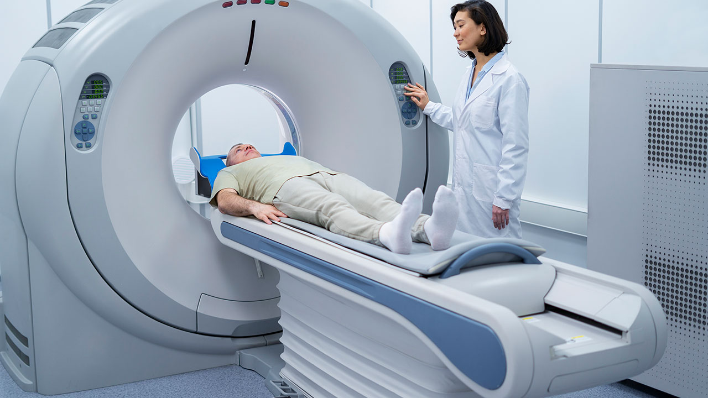
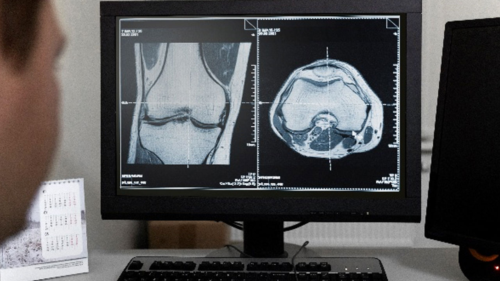

MÓDULO 3 | AULA 3 Interpretação de testes laboratoriais e de imagem para avaliação de intoxicação
Exames complementares
A avaliação da exposição a metais exige a escolha de exames laboratoriais específicos para cada elemento, considerando suas diferentes formas químicas, vias de absorção, distribuição no organismo e mecanismos de toxicidade. Esses exames auxiliam tanto na identificação da exposição quanto na interpretação clínica dos possíveis efeitos à saúde, subsidiando decisões de monitoramento, intervenção e tratamento.
Chumbo (Pb)
- Exame principal: chumbo no sangue (Pb-S).
- Marcadores auxiliares: ácido δ-aminolevulínico (ALA) e zinco-protoporfirina (ZPP) podem indicar inibição da síntese do heme;
- Interpretação clínica: valores acima de 5 µg/dL em crianças requerem intervenção; acima de 45 µg/dL geralmente indicam necessidade de quelação;
- Exemplo clínico: criança de 7 anos, moradora de área próxima à fundição, com Pb-S de 20 µg/dL, apresentando dificuldade escolar e irritabilidade.
Mercúrio (Hg)
- Exames principais:
- Urina: melhor para formas inorgânicas.
- Sangue: melhor para formas orgânicas.
- Cabelo: marcador de exposição a metilmercúrio.
- Interpretação clínica: valores elevados devem ser interpretados conforme exposição dietética ou ocupacional.
- Exemplo clínico: adulto ribeirinho amazônico com Hg em cabelo de 15 µg/g, apresentando tremores e déficit de memória.
Arsênio (As)
- Exame principal: arsênio total em urina de 24h.
- Exames complementares: fracionamento de espécies (arsênio inorgânico, metilado e arsenobetaina) é fundamental.
- Armadilha diagnóstica: consumo de frutos do mar pode elevar arsênio orgânico (não tóxico).
- Exemplo clínico: trabalhador de curtume com As urinário de 120 µg/L, associado a lesões cutâneas hiperpigmentadas.
Cádmio (Cd)
- Exame principal: Cd urinário de 24h
- Exames complementares: β2-microglobulina urinária e proteinúria de baixo peso molecular são marcadores precoces de nefrotoxicidade.
- Exemplo clínico: mulher idosa com osteoporose e fraturas recorrentes, Cd urinário de 4 µg/g de creatinina, residente em região de cultivo agrícola contaminado.
O quadro 3 apresenta uma síntese dos principais exames e achados para cada metal.
| Quadro 3: Síntese dos principais exames e achados para cada metal. | ||
|---|---|---|
| Metal | Exame(s) de escolha | Achados adicionais relevantes |
| Chumbo (Pb) | Sangue (Pb-S) | Anemia microcítica, basófilo pontilhado, radiografias com “linhas de chumbo” em crianças |
| Mercúrio (Hg) | Urina (inorgânico), sangue (orgânico), cabelo (metil-Hg) | Alterações neurológicas, tremor, proteinúria tubular |
| Arsênio (As) | Urina de 24h, cabelo/unhas (exposição crônica) | Lesões cutâneas, neuropatia periférica, alterações hepáticas |
| Cádmio (Cd) | Urina de 24h | Proteinúria tubular, redução da função renal, osteomalácia |
Exames de imagem e marcadores indiretos
Embora os exames laboratoriais sejam a principal ferramenta no diagnóstico das intoxicações por metais, os exames de imagem e alguns marcadores indiretos cumprem papel complementar relevante. Eles ajudam a identificar alterações estruturais e funcionais decorrentes da exposição, permitem avaliar sequelas de longo prazo e, em alguns casos, podem sugerir intoxicação mesmo antes da confirmação laboratorial.
Radiografias convencionais
As radiografias são um recurso de baixo custo e bastante difundido, sendo especialmente úteis em intoxicação por chumbo.

- Linhas metafisárias de chumbo: em crianças expostas cronicamente, podem ser observadas linhas opacas nas metáfises dos ossos longos, conhecidas como lead lines. Essas linhas resultam da interferência do chumbo no metabolismo ósseo, que altera a calcificação das cartilagens de crescimento.
- Fragmentos metálicos retidos: em casos de acidentes ocupacionais, disparos de armas de fogo ou exposição industrial, fragmentos metálicos podem ser identificados como áreas de alta densidade.
Exemplo
Uma radiografia de fêmur em criança de 5 anos revelou linhas metafisárias típicas. O exame laboratorial confirmou Pb-S de 22 µg/dL. O achado radiográfico reforçou o diagnóstico e ajudou na sensibilização da família para a gravidade da exposição.
Tomografia computadorizada (TC)
A tomografia pode ser utilizada em exposições mais graves, principalmente para avaliar complicações neurológicas e renais.

- Mercúrio: lesões de substância branca e atrofia cortical podem ser observadas em casos de intoxicação por metilmercúrio, embora a TC tenha menor sensibilidade que a ressonância magnética;
- Arsênio e cádmio: não há achados específicos, mas a TC pode detectar complicações secundárias, como neoplasias em pulmão e em bexiga.
Ressonância magnética (RM)
A ressonância magnética é particularmente útil na avaliação dos efeitos neurológicos do mercúrio.
- Metilmercúrio: pode provocar lesões no cerebelo, tálamo e córtex visual, detectadas como áreas de hiperintensidade em T2. Esses achados correlacionam-se com sintomas clínicos como tremores, ataxia e distúrbios visuais.
Estudos conduzidos em populações expostas ao mercúrio em Minamata (Japão) demonstraram atrofia cerebelar, achado associado a alterações motoras, como dificuldades de coordenação e equilíbrio.
Densitometria óssea
O cádmio exerce efeitos cumulativos sobre o metabolismo ósseo, levando à osteopenia e à osteomalácia. A densitometria óssea, embora não seja específica, é uma ferramenta importante no acompanhamento de populações expostas.

- Na doença Itai-Itai (Japão), mulheres expostas cronicamente a arroz contaminado com cádmio apresentavam fraturas frequentes e baixa densidade mineral óssea;
- No contexto brasileiro, estudos em comunidades rurais próximas a áreas mineradoras vêm sugerindo associação entre exposição a metais e perda óssea precoce.
Exemplos
- Depoimento clínico – Pediatria: “Recebemos uma criança com atraso escolar persistente. O exame de chumbo no sangue revelou 12 µg/dL. A investigação ambiental identificou o uso doméstico de panelas de cerâmica artesanal com esmalte contendo chumbo como provável fonte de exposição.”
- Relato ocupacional – Indústria de baterias: “Trabalhadores apresentaram níveis de chumbo superiores a 30 µg/dL, associados a queixas frequentes de dor abdominal. As medidas adotadas incluíram adequações no processo industrial e afastamento temporário de funcionários com níveis elevados.”